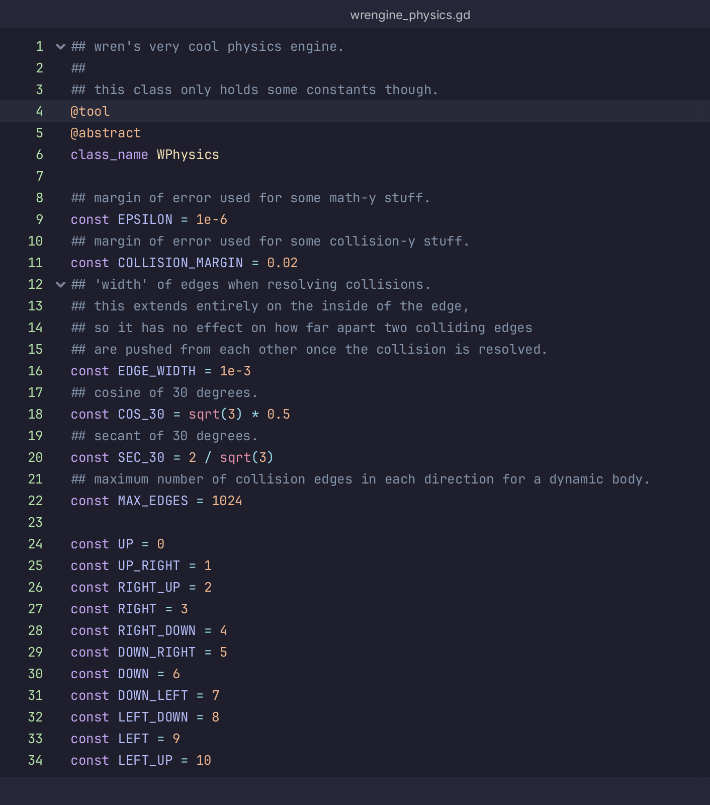
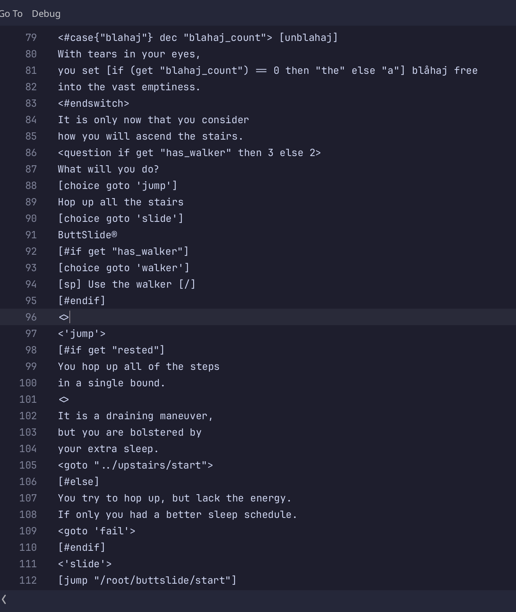
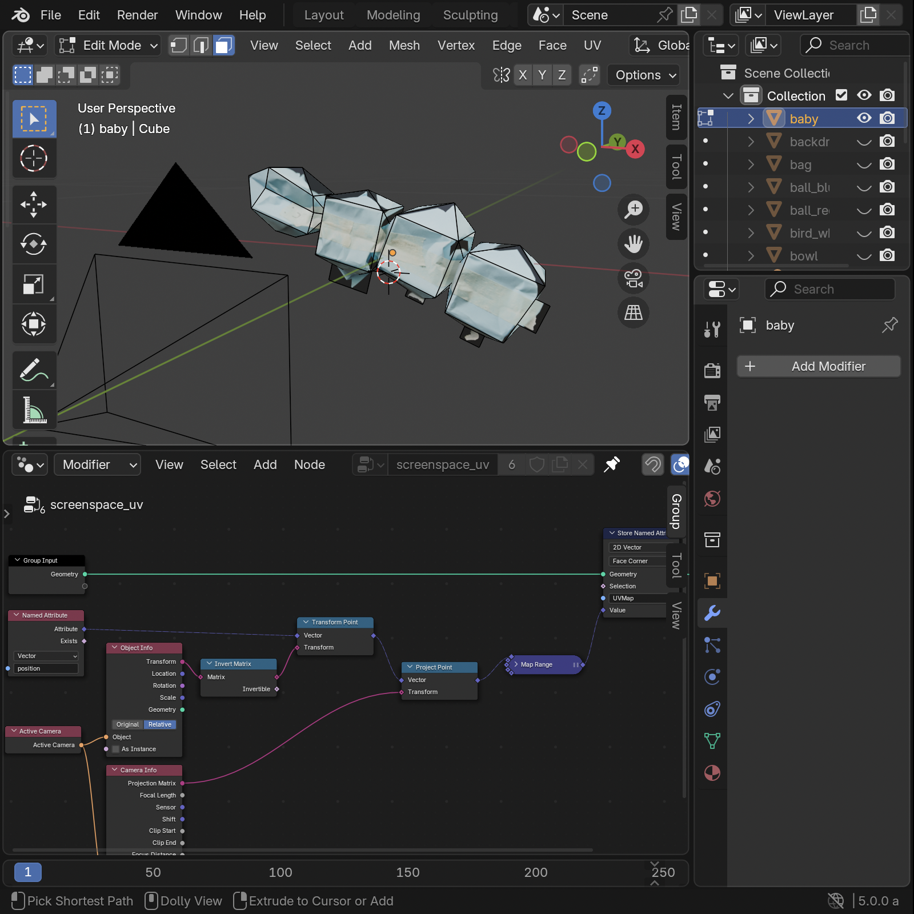

I am Wren. I make cool games and also other stuff.
things I like:
I am known to like things. These things include programming languages. These languages include:
- Rust
- Lua
- C#
- C++ (kinda sorta)
- Java (my enemy...)
cool games
Here are some cool games I made.
Mirror Image
Mirror Image is a 2D puzzle-platforming game I made in my sophomore year of high school. It was made using Unity (2019.4).
This was my first standalone game. The process of making it taught me a lot about iterative design and responding to player feedback.
It has a cool map and stuff too. Each area has a different color scheme and involves a different mechanic, all building off of the main "reflection" thing.

Compared to the small minigames I had made before, this was a big step up in both complexity and scale. I didn't have a good system of organizing and distributing the work, so I spent a lot of time putting unneccesary effort into overcomplicating specific things (like the undo system), rushing the menu and level design. You, the reader, will find this to be a bit of a theme among these projects....
Biblically Accurate Library Simulator
Biblically Accurate Library Simulator (BALS) is a 3D horror game set in a library. I made it using Unity (2022.3) in my junior year, working together with Nada Lisfi.
BALS was my first time making a 3D game, and my first time working in a group. It taught me the basics of 3D modeling. I had to do a lot of draw-call optimization, which included baking static meshes for each shelf and using a vertex shader to hide removed books (which used their own instanced meshes). Also like navigation and IK and stuff.
It also required a *lot* of external data processing on the book list, which was originally downloaded as a data dump from openlibrary.org. I did the bulk of the processing in horribly uncommented Python.

This game was probably the worst one in terms of organization and health of the creation process. The majority of the assets were made in the week before the hard deadline, staying up late. Communication with Nada was practically nonexistent.
Nearly Every Day Together
Nearly Every Day Together is a 2-player 2D co-op platformer. I made it using Godot (4.4-4.5) in my senior year.
Unfortunately I didn't get to the whole "co-op" part due to time constraints, but it's still cool and good I swear.
A fun thing with this one was the fact that I made the whole darn thing myself. Like can you even believe it.
I made the stupid stupid mistake of letting myself go too far and build an entirely custom physics system for it. The advantage is that it's cool and fun and it lets me do slopes with minimal jank. The disadvantage is literally everything else.

The creation process went pretty well with this one, although there was still a rush at the end. It helped to not have to coordinate efforts with another person, but it also helped that I had finally learned how to use git for version control.
Avery Simulator 2025
Avery Simulator 2025 is a short visual novel game set in my own house. I made it in a month (as a birthday present for my sibling) using Godot in my junior year. It is mostly 2D with very few 3D parts.
For this game, I made my own dialogue engine and associated language. Kinda like LISP, but not. That was fun. Still need to get around to remaking that for my next game....

I would call this and Kate Simulator the best games I've made, in terms of the production process. They progressed evenly and in good time.
Kate Simulator 2025
Another visual novel birthday present, using the same dialogue engine as Avery Simulator. It's a mix of 2D and 3D elements.
This one was fun because I got to take a 360-degree panorama of my bedroom. At least it *was* fun until I had to spend hours manually fixing the misalignments in the composited image.
I had this whole setup for making 3D models based on photos and using geometry nodes to generate UVs from the original image. There were a lot of Blender crashes involved, since I was using the 5.0 beta to get access to those sweet sweet projection matrices.

where next?
I don't know, really. Now that I've (basically) graduated high school, I have a lot of options open to me. I plan on keeping game development as a hobby, but not anything professional.